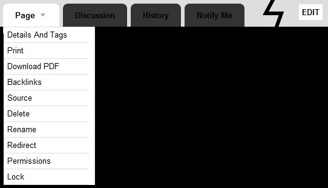
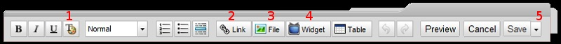

If you've offered to help me by becoming an editor for
bartonhistory.wikispaces.com, welcome! I've created this page to answer 'frequently asked questions' that might not be answered anywhere else. Do contact me with any additional queries.
How can I rename a page, and what happens if I do?

Wikispaces tabs. Left-click on the triangle next to 'Page' to view the dropdown menu shown here. Left-click on the 'EDIT' button at the right end to edit pages.
Obviously renaming a page (for example to insert a date or change a spelling) may break any links pointing to the old name, but it doesn't have to. The Rename option is shown above. When you click on it, you are taken to a page asking for the new page name, and telling you how many pages contain links to the old page name (and if there aren't too many - what those pages are).
If you put a tick in the 'Add Redirect' box, the old name will be kept, but redirected to the new page, so this is a safe bet. However the anal retentive in me dislikes cluttering up the joint with too many redirects, so if there are only a few links to the old page, I prefer to forgo the redirect option and instead manually change the links.
How are you using tags on your wiki?
If you create a new page, you're asked to enter 'tags' for the page. You can also see and edit existing tags for a page if you click on the 'Details And Tags' option in the Page submenu (see screenshot above).
If entering multiple tags, hit 'enter' after each one; a tag can contain more than one word, so Wikispaces needs a way to delimit one tag from another.
The commonest tags in use then appear in a table at the bottom of the home page, and help users to pick out pages with certain commonalities. I also use them to automatically create indexes of different page types, so do please try and follow my example. So what tags do I create?
1. Most pages on this site are tagged either '
people', '
places', '
sources', or '
objects'. Tag your page appropriately and it will then automatically appear in the 'All people', 'All places', 'All objects', and 'All sources' indexes in the vertical navigation bar on the left hand side. Additionally I use the tag '
favourite' on any pages which I wish to automatically appear in the list of 'SELECTED PAGES' in that navigation bar. Feel free to do the same, in moderation.
2. I always add first names, middle names, and surnames (both birth and married surnames in the case of women) as individual tags. Thus if so inclined a user can click on the '
john' tag and go to a list of all people with that name.
3. Most people and sources pages have one or more 'century tabs': '
15thc', '
16thc', '
17thc', '
18thc', '
19thc', '
20thc' and even '
21stc'. These should be quite self explanatory.
4. I have also included (though incompletely at the moment) placenames as tags, not only for places etc but also for people, e.g. '
cumbria', '
london' etc.
5. Where appropriate I have added 'generational tags': '
gx0' meaning 'zero greats', i.e. grandparent, '
gx1' meaning 'great grandparent', '
gx2' meaning 'great great grandparent' and so on. Obviously these are only directly relevant to me, but I hope they also act as a handy 'ruler' against which relatives can measure their own distances to various ancestors.
6. I've also been using certain miscellaneous tags to track certain characteristics: '
died young', '
spinster', '
reverend', '
sir', '
military', and '
published' are the ones that spring to mind. Feel free to invent your own, but don't go mad. Too many tags, I have found, render the whole tag system a bit useless.
How do I sort out formatting problems?
The Wikispaces WYSIWYG editor (a.k.a. the Visual Editor) is good and easy enough to use, but occasionally you do get bugs: bits of formatting that won't go away, or which seem to muck up existing formatting, for example.
Specific problems I've noticed:
- Copying and pasting text from one page to another doesn't work as expected, and can introduce oddities that need tidying up afterwards.
- Lists and header styles can be difficuly to eradicate, especially if copied from another page.
- If you embed the 'Reference' widget in a page (for footnotes), within a bit of text that contains ongoing formatting (such as italics, bold, underlining or coloured text), the Visual editor doesn't close the tags properly and it mucks up all subsequent formatting. For this reason I have stopped using this widget for the time being.
Solutions:

Wikispaces editing toolbar. Left-click on the triangle to the right of the 'Save' button (5) to access the following extra options: 'Save with Comment', 'Save and Continue', and 'Wikitext Editor' (or if using the Wikitext Editor this shows 'Visual Editor').
Firstly you can highlight text, hit the Text formatting button (1 above), and click on 'Clear Styles'. This doesn't always work though.
Secondly, the
pro tip! In the 'Save' drop down menu (5 above) select 'Wikitext editor' (which isn't 'What You See Is What You Get' but does expose the raw text with the
Wikispaces formatting code. You can manually resolve any and all formatting woes this way.
A useful tip regarding inserting names as links
If you want to insert a name (with dates), which already has a page here, and you want to hyperlink it to the relevant page all at once: make sure no text is highlighted, then hit the Link button (2 above), pick the Wiki Link tab, and start typing the name in the 'Page Name' box. A list of autocomplete options will soon appear. Click on the right one, hit 'Add Link', and hey presto, the full name (with dates), all properly hyperlinked, appears in your text. This is
very useful. You can also do the same thing but in the Link menu change the text that will appear in the page to something different from the page name.
What are anchors? And how do headings help?
It's sometimes useful to be able to link to a subsection within a page, like
this. There are two ways you can make this possible:
- You can manually insert a special kind of link called an 'anchor': click the Link button (2 above), select the Anchor tab, type in the name you want to use, then hit 'Add Link'.
- You can format a bit of text as a 'header': highlight the text, click the little arrow to the right of 'Normal' in the toolbar to get the drop-down menu, and click on 'Heading 1'.
Whichever you choose, the hyperlink to that anchor or heading will then look like
http://bartonhistory.wikispaces.com/Page+Name#Anchor Name Or Heading Name ( means a space in the anchor or heading name). Or you can hit 'Link' (2 above), then the 'Wiki Link' tab, then after entering the page name, click on 'Link to anchor?' and enter the anchor or heading name there.
Is there a house style?
I have ended up adopting certain conventions, and it would be nice to keep the whole site as consistent on these points as possible, though they're hardly gospel.
- All 'sources' pages have names beginning with a *.
- All 'people' pages have dates in the name if known, and the articles start with certain key bullet points in a certain order. For example.
- I put quoted text in italics (although I'm starting to wish I'd chosen a different way now, but nevermind).
- I keep dates always in the format '1 January 2011', i.e. day, full name of month, full year. (Keeping this consistent helps site-wide searches to work properly). Even in quoted text I tend to expand month and year abbreviations for the same reason.
- When you insert links there are two types: internal (to other pages on this site: these can additionally contain links to anchors or headers within a page) and external (to other webpages out there). When creating links you have an option to have the link 'open in a new page' when someone clicks on it. I always tick this option for external pages, but not for internal ones.
How can I insert pictures?
You can embed images on a page using the File button (3 above), under the 'External Image' tab. However the source image file needs to be hosted somewhere else, with a public URL. I use the
Dropbox service for this, which comes with free space and has various other benefits. You can, if you wish, join my Dropbox and share it with me, which allows you to view my private genealogy files or photos, and add your own. I used to keep lots of documents there, but there is no need now that this website exists. I will, however, always keep full-size scans of photos there, plus a few special documents. I then put smaller copies of photos in the 'public' section of my Dropbox which allows me to embed them in this site.
I would rather keep all photos on this site collected together in that public folder, so if you have images to add, email them to me or join the Dropbox and put them in there (which may be faster if you have a lot).
How can I insert maps, street views, and embedded books?
These are all done through the 'Widget' button (4 above), in concert with some special code that you copy from the relevant place.
Maps
Google Maps is particularly good for customised maps. You have to sign up to Google services, but then go to the 'My maps' option on the left-hand side, and create your own with custom markers, routes, borders etc. Once created and saved, any map that you are looking at can be embedded as follows: click the Link option (top-right), click 'Customise and preview embedded map', tweak it to your taste (I've been putting most maps in with a width of 800 and a height of 300), then copy the HTML code to your clipboard (highlight and ctrl-C), click on the Widget button (3 above), click 'Map' on the left hand side, then click on the Google Maps logo, paste the HTML code into the box that appears, and hit 'Preview' and/or 'Save'.
Bing Maps is good for Ordinance Survey maps and also aerial imagery. Once you have the map as you want it, click the 'Share Your Map' button at the bottom-left which looks like a flying envelope, hit 'Customise and preview', set your custom map size (preferably width 800 height 300), hit 'Generate code', copy it as above and paste it into Widget>Map>Other and Save.
Street view
Google's brilliant
Streetview imagery can be embedded via a third party site called
http://www.streetcities.com/StreetMap.aspx. If you've mastered embedding maps as above then the process is similar, but you paste your code into Widget>Other.
Books
Google Books lets you embed bookreaders for any books that are 'full view'.
Here is an example. It can be embedded much like a Google Map: click 'Link' (top right) to get the embeddable code. I don't currently know of a way to get a 'two page' view embedded, so I prefer to use the next option:
Archive.org has - I think - every book that's in Google Books, plus some more (
here is an example), and has a better embeddable book reader (in my opinion). The embeddable code can be acquired through the 'Share this book' button (top-right, second from the right, with a symbol like three joined circles). Tick '2 pages', and 'Open to this page?' if desired, and copy the code into Widget>Other. I generally prefer an 800 x 600 size for these, but you must manually edit the code accordingly.
If not, I'd really like to add you, or have you add yourself. Send me the picture and I'll host it on my Dropbox so it doesn't get lost. I'm intending to order this page roughly by relatedness (to me), with more distant relatives lower down the page, and unrelated family researchers below them.
This site is very Dave-centric!
No, you're right. Originally I was the only editor, so I've sloppily used language like 'my great grandfather' throughout. I will now go through and change these when I find them - to 'DBHB's great grandfather' etc. If you want to add similar personal references, use your own initials (hyperlinked - if you can - to an 'anchor' next to your section on the Living Connections page).
The home page and this page may be exceptions to this rule.
Any other questions?
Let me know!